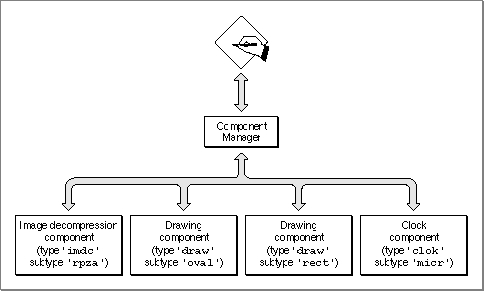

About the Component Manager
The Component Manager provides services that allow applications to obtain run-time location of and access to functional objects (in much the same way that the Resource Manager allows applications that are running to access data objects dynamically).The Component Manager creates an interface between components and clients, which can be applications, other components, system extensions, and so on. Instead of implementing support for a particular data format, protocol, or model of a device, you can use a standard interface through which your application communicates with all components of a given type. You can then use the Component Manager to locate and communicate with components of that type. Those components, in turn, provide the appropriate services to your client application.
Given a particular component type, the Component Manager can locate and query all components of that type. You can find out how many components of a specific type are available and you can get further details about a component's capabilities without having to open it first. For each component, the Component Manager keeps track of many characteristics, including its name, icon, and information string.
For example, components of type
'imdc'provide image decompression services. All components of type'imdc'share a common application interface, but each image decompressor component may support a unique compression technique or take advantage of a special hardware implementation. Individual components may support additions to the defined application interface, as long as they support the common routines. Any algorithm-dependent or implementation-dependent variations of the general decompression interface can be implemented by each'imdc'component as extensions to the basic interface.Figure 6-1 shows the relationship between an application, the Component Manager, and several components. Applications and other clients use the Component Manager to access components. In this figure, four components are available to the application: an image decompression component (of type
'imdc'), two drawing components (of type'draw'), and a clock component (of type'clok'). Note that the two drawing components have different subtypes:'oval'and'rect'. The drawing component with subtype'oval'draws ovals, and the drawing component with subtype'rect'draws rectangles.Figure 6-1 The relationship between an application, the Component Manager, and components

The Component Manager allows a single component to serve multiple client applications at the same time. Each client application has a unique access path to the component. These access paths are called component connections. You identify
a component connection by specifying a component instance. The Component Manager provides this component instance to your application when you open a connection to a component. The component maintains separate status information for each open connection.For example, multiple applications might each open a connection to an image decompression component. The Component Manager routes each application request to the component instance for that connection. Because a component can maintain separate storage for each connection, application requests do not interfere with each other and each application has full access to the services provided by the component.
(See Figure 6-2 on page 6-33 for an illustration of multiple aplications using the services of the same component.)